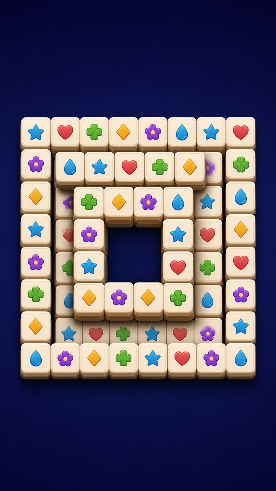
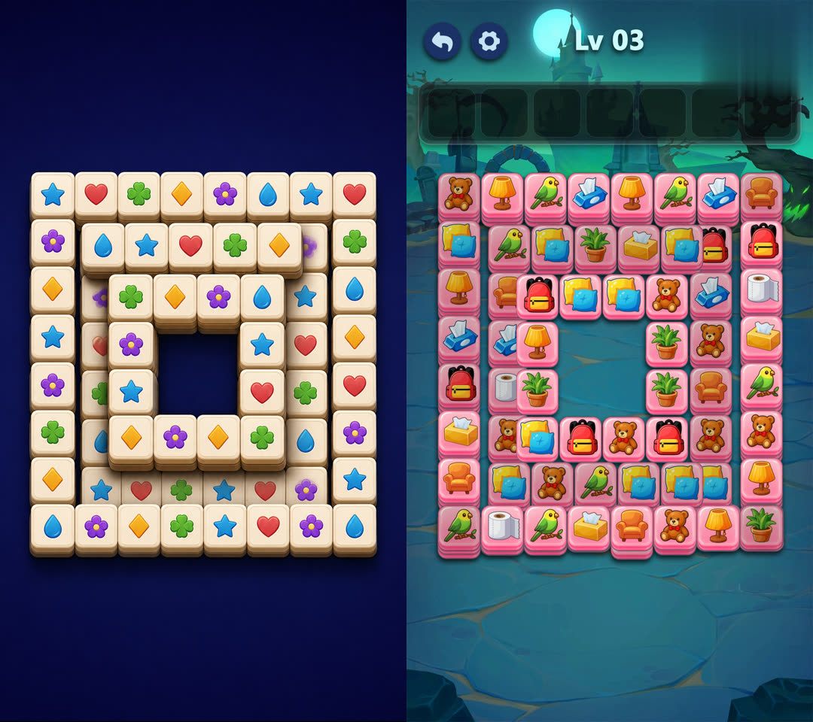

1. 改造前
2. 引导图

3. 改造后
After Effects
把引导图里的可见牌堆迁进可编辑源 AEP。外形只跟引导图；点击、匹配、消除、Mover、手势、UI、音频和渲染路线只跟源工程。不打开引导图对应的源 AEP。
左边是源工程原来的堆叠和玩法。中间是这份任务要跟的引导图，只决定轮廓、空洞和顶面节奏。右边是迁过去之后：美术和点击还在，牌面几何改成引导图那种中空回字。
1. 改造前
2. 引导图

3. 改造后
左改造前，右改造后。

不是一次生成一个大 JSON。能力预检之后，源工程和引导图分成两条支线，只在容量协调汇合。每一步写成不可变 Receipt，CAS 提交；上游重做，下游作废。
INITIALIZED
-> CAPABILITY_PREFLIGHT_PASSED
-> SOURCE_ROUTE_LOCKED
-> BOARD_INVENTORY_LOCKED
-> EVENT_MODEL_LOCKED -------------------------+
-> REFERENCE_ROI_LOCKED |
-> VISIBLE_LAYOUT_LOCKED |
-> DEPTH_EVIDENCE_LOCKED ----------------------+
-> CAPACITY_RECONCILED
-> ASSIGNMENT_SOLVED
-> SIMULATION_PASSED
-> PROPERTY_PLAN_FROZEN
-> APPLY_READBACK_PASSED
-> PREVIEW_ACCEPTED
-> FULL_RENDER_PASSED
INITIALIZED → CAPABILITY_PREFLIGHT_PASSED
源 AEP 和引导图拷进 staging，原文件打 Hash。之后只动拷贝。预检查 AfterFX、ffmpeg、ffprobe。这一步不管工程含义。
SOURCE_ROUTE_LOCKED → BOARD_INVENTORY_LOCKED
只读检查 staged AEP。改嵌套棋盘合成，渲最外层包装合成。缺素材和表达式错误按这条路线计，不拿整个工程的历史脏点当自动阻断。棋盘上每个候选图层必须入册或带证据排除；点击事件不等于全部牌层。不能在这里决定点击时刻或目标槽位。
EVENT_MODEL_LOCKED
只抄检查结果：前后关系等于 layerIndex，活动区间等于 in/out，点击和 Mover / 手势必须有源证据。改任何玩法事实会让 Hash 对不上，后面的节点全部作废。不能为了布局好看去改图层顺序或花色。
REFERENCE_ROI_LOCKED → VISIBLE_LAYOUT_LOCKED → DEPTH_EVIDENCE_LOCKED
ROI 只圈牌堆，把手、托盘、UI 排除掉。可见布局是堆叠语法：轮廓、空洞、行列、顶面锚点。源工程有多少张牌、后面要藏多少层，这里不许写。提案和复核必须换上下文，自己批自己不算。完全看不见的垫层标 unknown，不能假装「图上看到了」。
CAPACITY_RECONCILED
两条支线在这里汇合。源牌数等于物理槽位数。看得见的顶面保留；多出来的牌分到后面，并标明 observed / inferred / synthesized-for-surplus。可以决定槽，不能改已经锁死的外形或源事件。
ASSIGNMENT_SOLVED → SIMULATION_PASSED
求解器做一对一映射。每一行只能有 tileId 和 slotId。模拟要过覆盖、身份、边界、点击遮挡和前后顺序。没拿到 writeAuthorized，就不能写 AE。失败时禁止偷偷改上游 JSON。
PROPERTY_PLAN_FROZEN → APPLY_READBACK_PASSED
Property Plan 是事务：身份、旧值、新值、容差、依赖锁。默认只动 Position / Scale，不重排图层。写入隔离拷贝，输入输出路径必须不同。同一次会话读回不够，必须另开 AE 重新打开输出工程核对。原 AEP Hash 全程不能变。
PREVIEW_ACCEPTED → FULL_RENDER_PASSED
静帧、对照、overlay 和点击短样交给全新上下文复核。QA 只打 typed issue，退回 DAG 上最早有权修它的节点。轮廓不对又点不动，要退可见布局，不能在分配上打补丁。预览通过后再渲包装合成，整段解码，再核原工程 Hash。外形不够只能停在 CANDIDATE，不能叫完成。